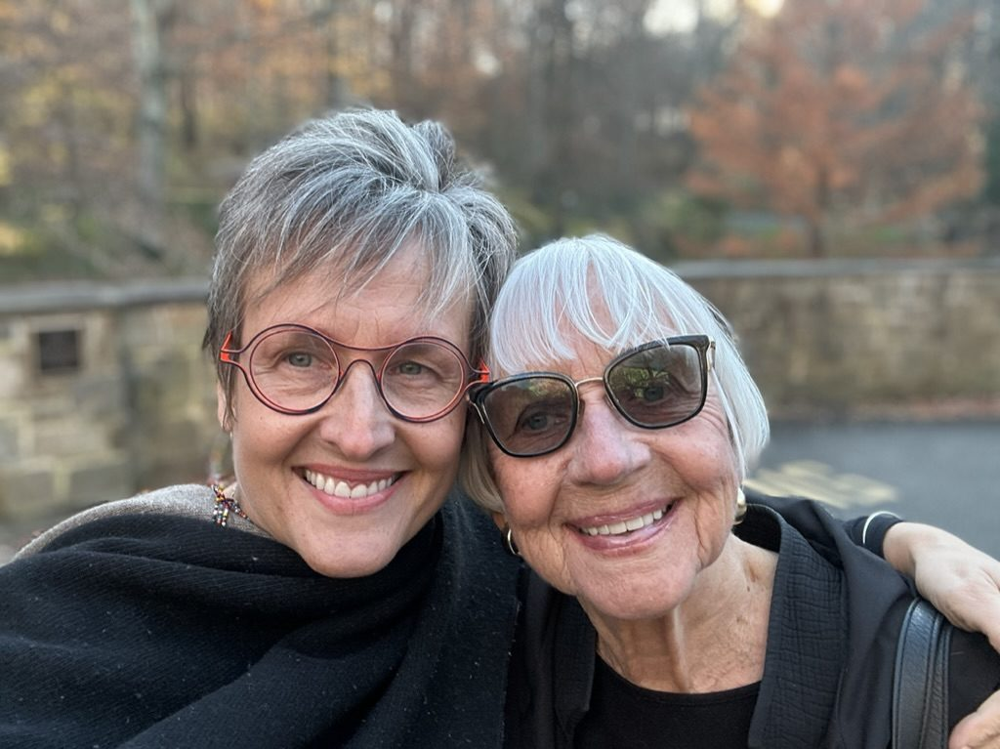
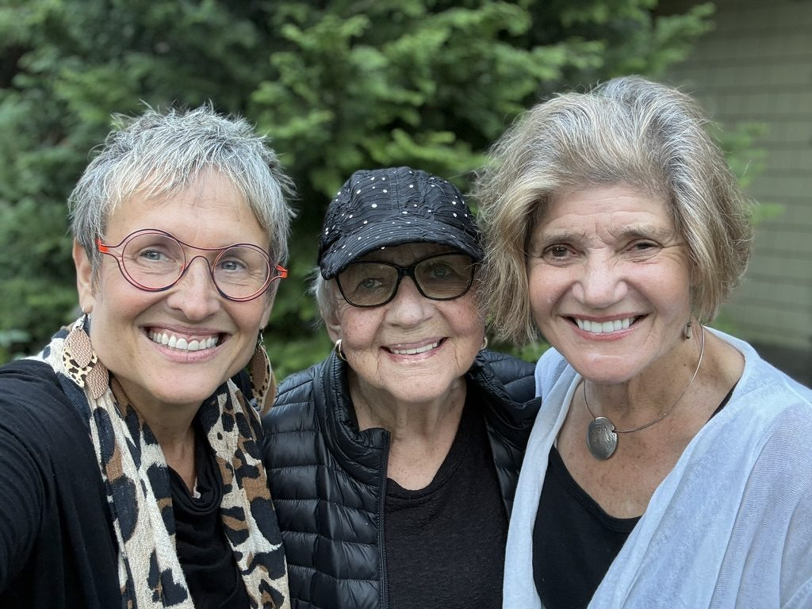

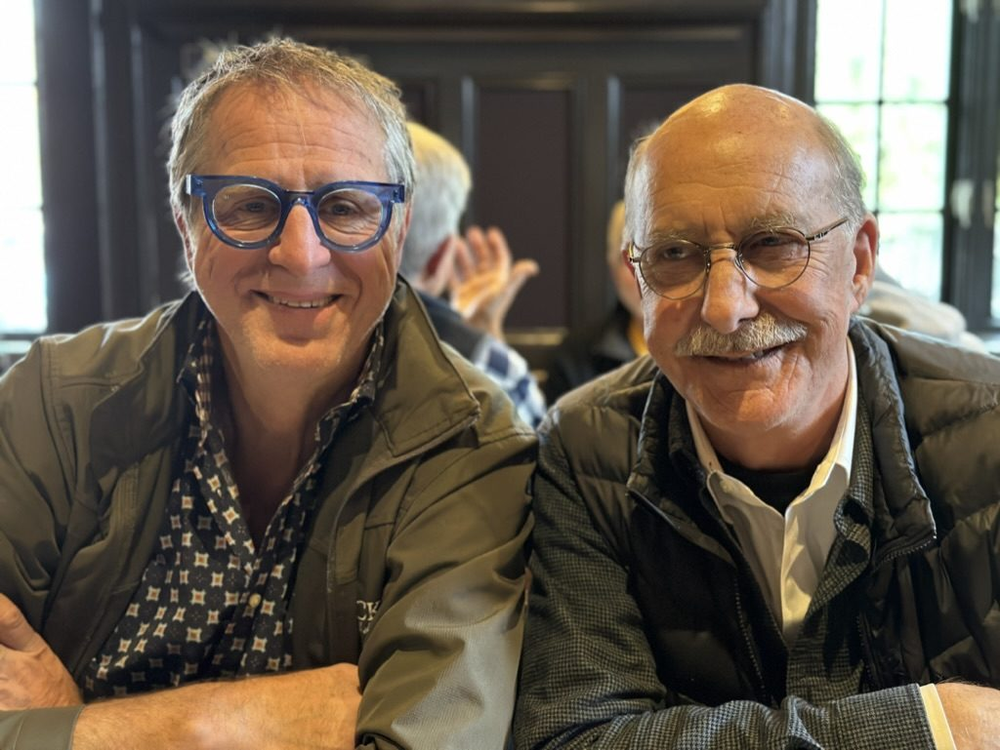
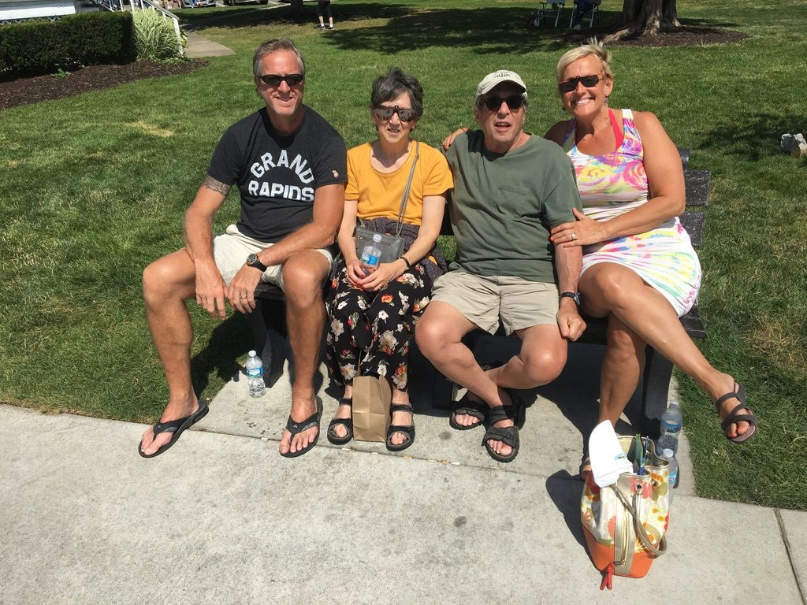
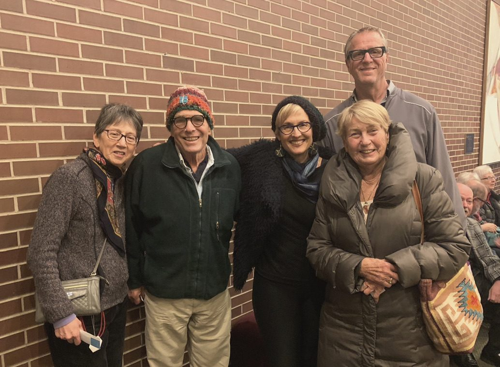
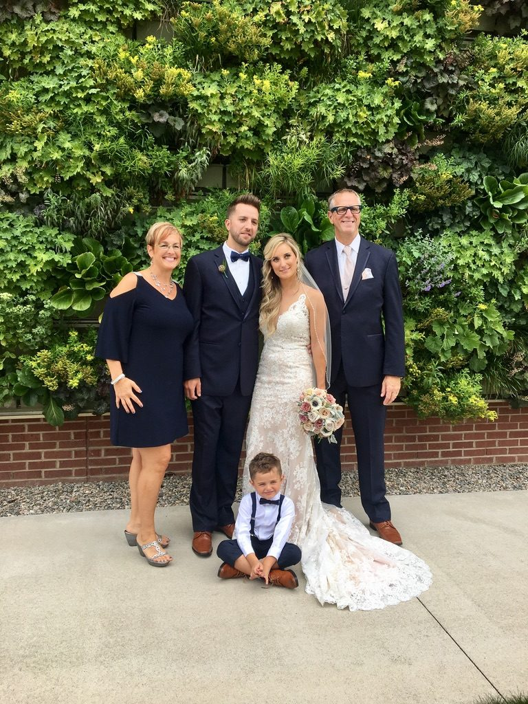
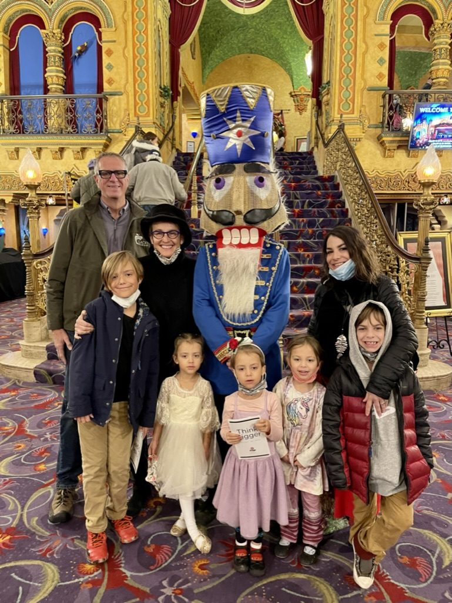
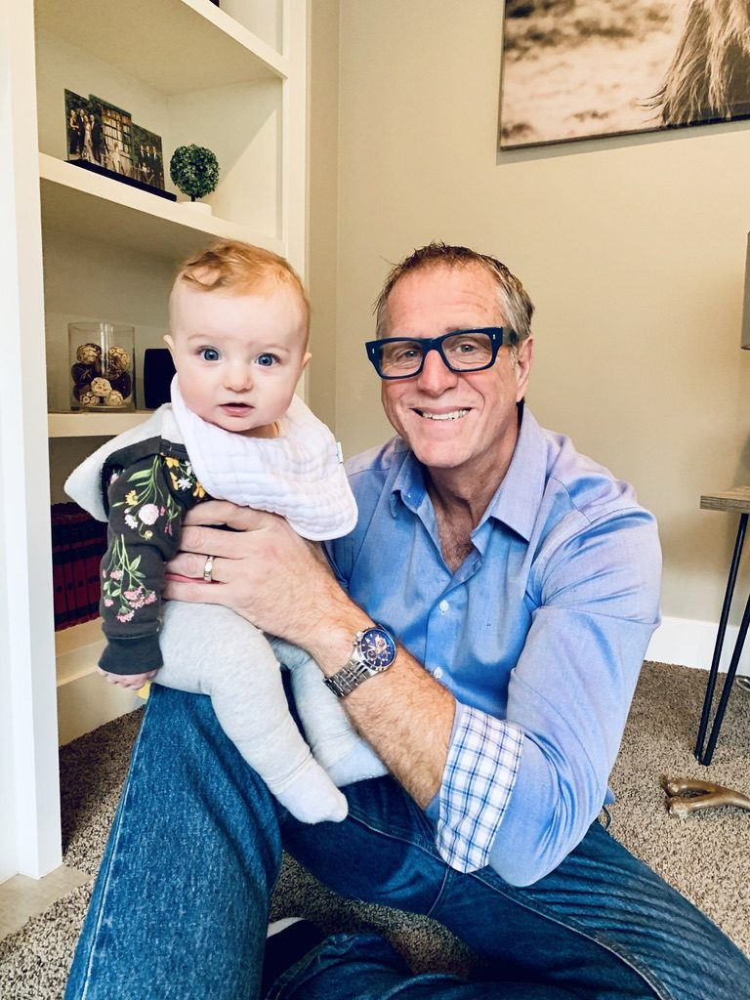
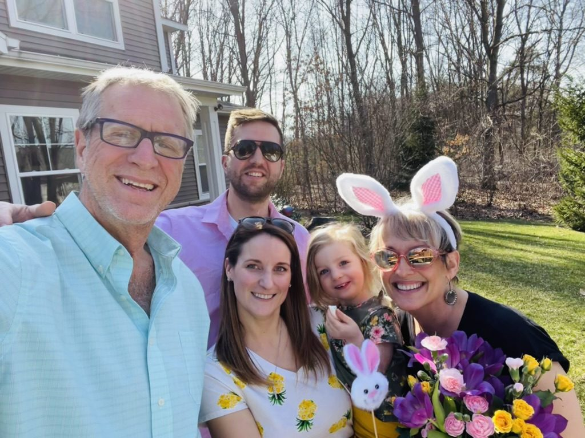
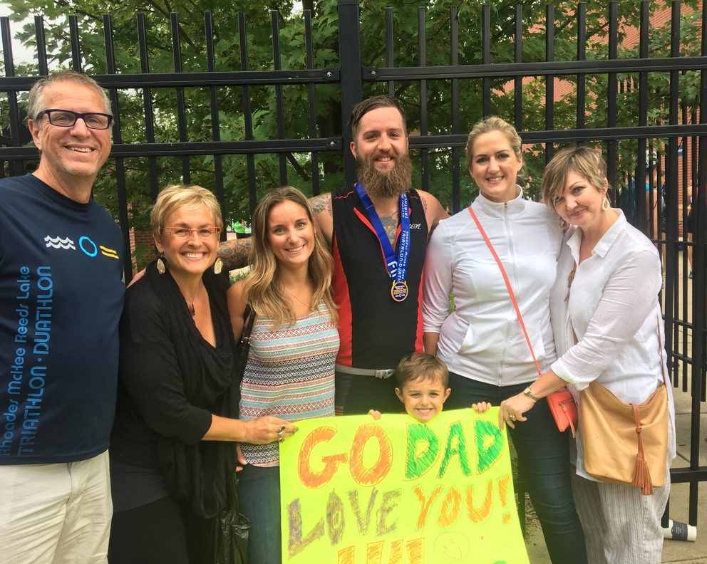
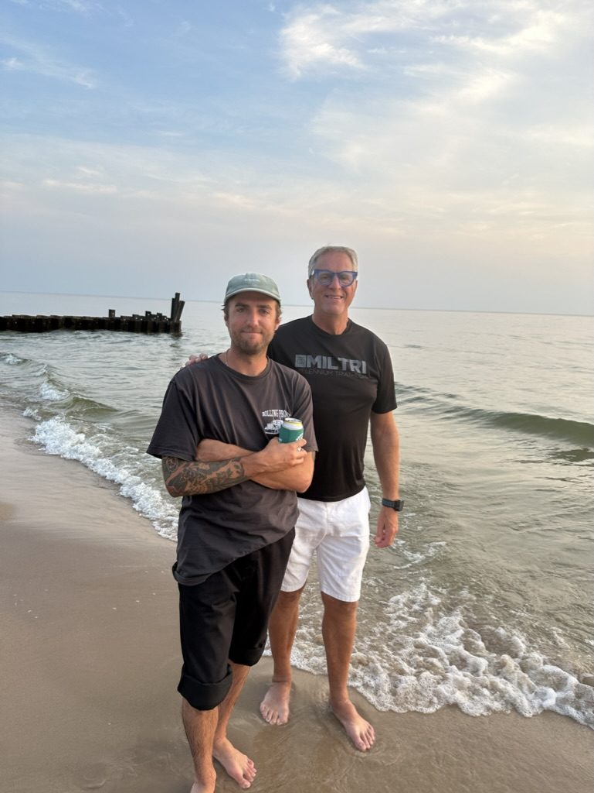
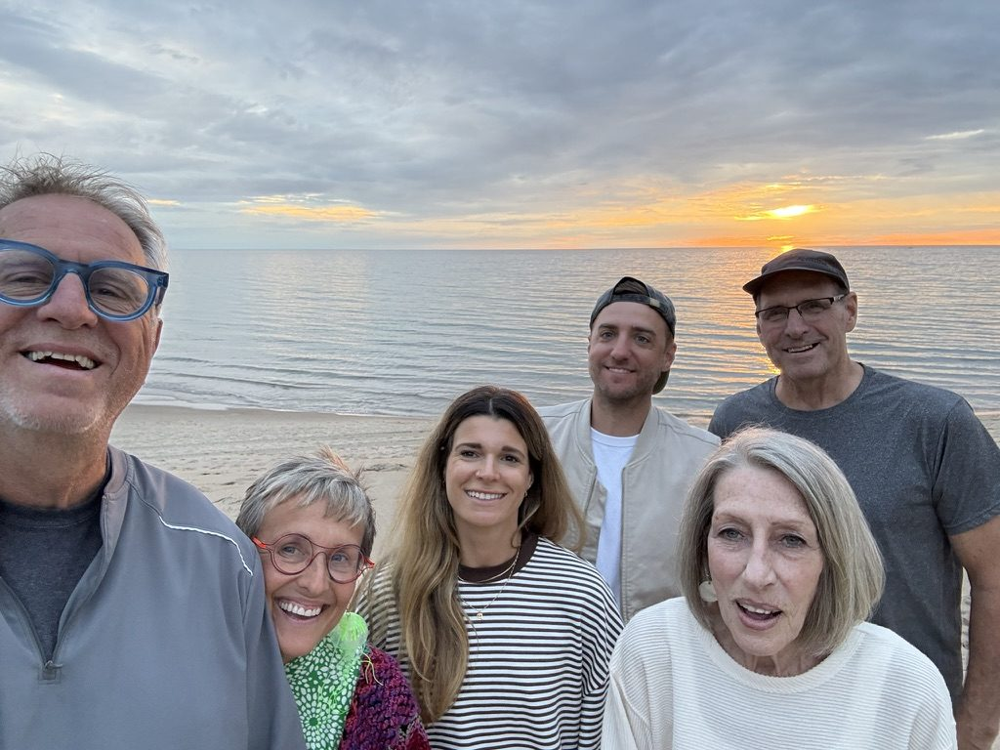
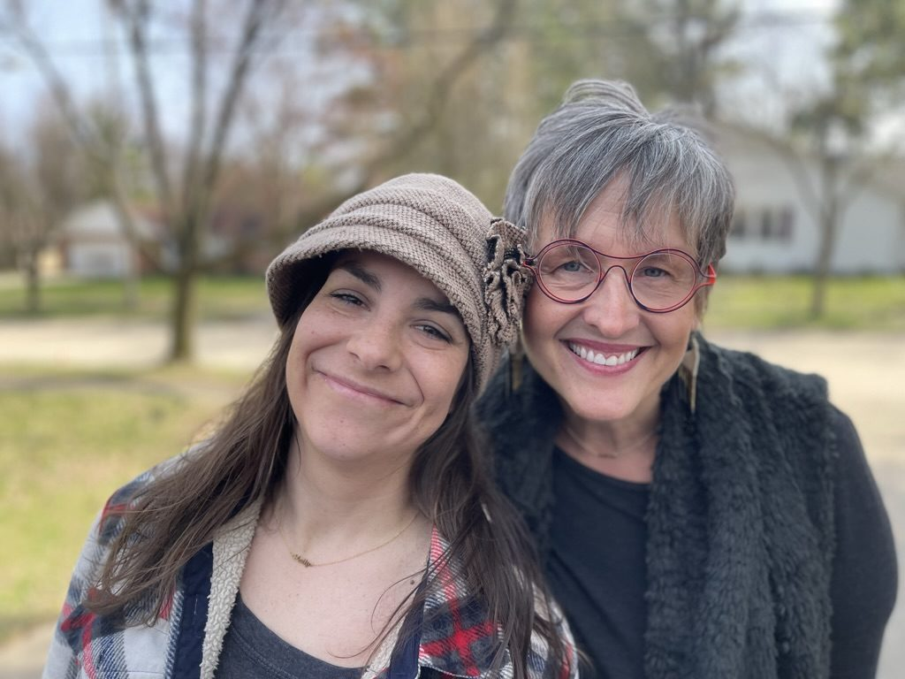
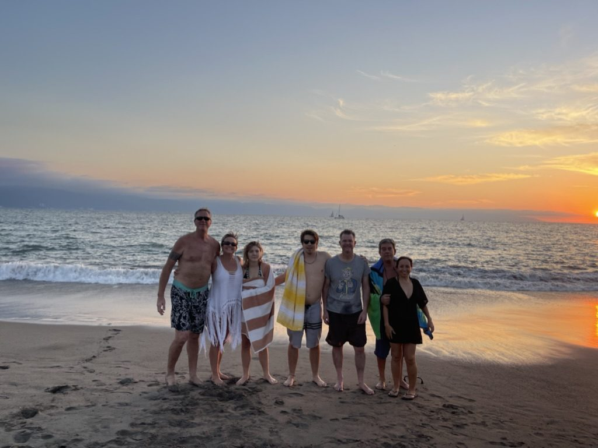
Family first: the parents who found us and the ones who raised us, the kids and grandkids, and the friends who became family. Every one of them walked through the door of 224.














Before the consulting, the retreats and the Loft, Erica spent the 1990s in Girl Scouts: a troop leader in Michigan, a unit leader in Frankfurt, Germany, and the founding director of the teen programs at Girl Scouts of Michigan Trails.
Neighbors from the building, Clean Up crews, board members, ArtPrize artists, clients and colleagues, and more than a thousand guests who arrived as strangers and left as friends. If you're reading this, you're on this page too.